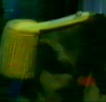
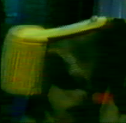

|
Vidéo 1.Avant-propos Cette catégorie de filtres concerne les vidéos entrelacées. 2.Filtres d'entrelacement
Il s'agit d'un portage du filtre de Donald Graft smart-deinterlace pour YV12 Il détecte si l'image est entrelacée et rend floues les parties qui le sont. Ce filtre accepte deux paramètres : Ce filtre prend une trame dans une image et l'autre dans l'image suivante. De nombreux films (et certains DVD) sont entrelacés de cette manière. Ce filtre n'effectue aucun contrôle, alors appliquez-le, regardez ce que cela donne et si le résultat vous plaît, conservez-le. Ce filtre est une combinaison des deux précédents. Il compare l'image courante et le traitement de celle-ci par le filtre Pal Shift, puis applique le filtre deinterlace à la moins entrelacée des deux. Comme ce filtre ne tient pas compte de la chrominance, il se peut qu'il génère de légères erreurs à ce niveau. Il est assez lent, mais très efficace sur les vidéos du bon type. Il peut également faire office d'IVTC de fortune, en reconstruisant les images progressives, mais il conserve la cadence de la vidéo à 30 ips et ne supprime pas les images en double pour atteindre 24 ips. Il s'agit d'une combinaison des deux filtres précédents. Ce filtre a été écrit par Ron Reithoffer. Lorsqu'il détecte une trame trop différente de ses voisines spatiales ou temporelles (drop out VHS), ce filtre la supprime et la remplace par une valeur moyenne entre l'image suivante et l'image précédente. Selon son auteur, ce filtre doit être appliqué en premier et ne fonctionne pas très bien avec les images fortement entrelacées.
Dans certains cas, pour convertir un film (24 ips) en NTSC (30 ips), on lui applique un processus telecine. Il duplique certaines trames des images de façon à obtenir une cinquième image. 1 2 3 4 => 1 2 2 3 4 1 2 3 4 => 1 2 3 3 4 Lorque cela s'avère possible, il est préférable de prendre l'image progressive originale, mieux adaptée et plus facile à encoder. Ce filtre adopte une approche systématique pour repérer les images originales. Il "comptabilise" les effets d'entrelacement dans chaque image et si deux images sont les plus entrelacées ET qu'elles se suivent alors il considère qu'elles sont susceptibles de convenir. Pour le moment, la première image ne doit pas être entrelacée (vérifiez ce point à la prévisualisation), sans quoi le filtre ne parviendra pas à identifier les images ayant subi un effet telecine. Ce filtre manque encore de mâturité : vous êtes prévenu ! Ce filtre convertit une vidéo de 24 ips à 30 ips en dupliquant certaines de ses trames. Il peut s'avérer pratique pour les lecteurs DVD qui ont un peu de mal avec les VCD à 24 ips. 3.Filtres liés aux trames Il n'est pas rare que les logiciels ou les cartes d'acquisition intervertissent les trames. Cela donne alors une sorte d'effet d'entrelacement, mais sur l'ensemble de l'image, et plus seulement sur les éléments qui se déplacent Ce filtre permet de remettre les trames dans le bon ordre. Voici un exemple simple, où les trames de la première image ont été interverties : Voici la sortie du filtre SwapFields : Il n'est pas rare non plus qu'un logiciel ou une carte d'acquisition intervertisse l'ordre des trames plusieurs fois. Ce filtre essaie de détecter les endroits où ces changements se produisent pour rétablir les trames dans le bon ordre. Il est généralement recommandé de préférer ce filtre au précédent. Ce filtre ne conserve que les trames paires, c'est-à-dire les lignes portant un numéro pair dans les images. Il diminue donc la résolution verticale de moitié. Identique au précédent, mais pour les trames impaires. Ce filtre crée deux images à partir d'une image initiale, chacune conservant une trame de l'originale. Vous doublez ainsi la cadence, doublez le nombre d'images et divisez la résolution verticale par deux. Effectue l'opération inverse du précédent. |